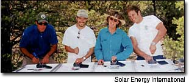

Get Your Hands On Solar
Get plugged in to the exciting realities of photovoltaics, whether just to learn the basics or maybe to find a new career.
By Laurie Guevara-Stone
August/September 2003
Plug in your PC for PV
Consider signing up for an online introductory course if you are new to renewable energy. You simply pay the course fee, log on and learn at your leisure. Most online courses provide discussion forums and downloadable text; some, like SoL Energy of Carbondale, Colorado, include solar sizing-and-design software. Expect to pay from $150 for an online overview of photovoltaic (PV) systems to $500 for a comprehensive online class on system design and installation. Course duration can span from several weeks to many months, depending upon the course requirements and your motivation. This chart highlights various groups that offer online introductory courses.
Get Your Hands-on PV
Several organizations conduct weekend-long classes on PV systems. Besides learning about solar, participants who attend the Solar Living Institute's (SLI) one- and two-day workshops in Hopland, California, get to experience renewable energy firsthand. SLI's beautiful 12-acre renewable-energy powered and permaculture-landscaped campus features a small 3-kilowatt wind generator and 10-kilowatts of solar power. The Midwest Renewable Energy Association (MREA), in north central Wisconsin, also holds two-day and longer workshops. Students choose from a multitude of different solar electric workshops tailored to various levels - from beginner to advanced. Many of the workshops are taught in a solar- and wind-powered classroom facility, on 5 acres just outside of Custer. Fees for these short courses start at $150.
If you want more thorough training, many organizations offer longer, more intensive courses. At Solar Energy International (SEI) outside of Carbondale, Colorado, students spend two weeks learning about photovoltaic systems. The first week is dedicated to classroom instruction. Along with SEI instructors, guest speakers from different aspects of the renewable energy industry give students a unique perspective and understanding of what it's like to work in the industry. During the second week, students apply their acquired knowledge in the field, configuring a photovoltaic system. Mia Devine, a graduate from one of SEI's Women's PV workshops, says that SEI's workshops gave her a "jump-start" and, most importantly, "two sets of tools: physical tools (wrench, screwdriver, drill) and mental tools (confidence, strength and knowledge)."
The Florida Solar Energy Center in Cocoa leads photovoltaic installation classes specifically for contractors and engineers. The week-long course also balances book-learning with hands-on PV practice, with an emphasis on code compliance and "state-of-the-art industry design." Expect to pay from $550 to $1,100 for five-day to two-week-long courses. But these classes are generally worth every penny: longer length classes offer a wealth of knowledge and more experience with PV.
Training and Certification
Since April 2001, the North American Board of Certified Energy Practitioners - which includes representatives from the solar industry, independent installers, systems manufacturers, educators and government officials - has been developing a voluntary national certification program, starting with credentials for photovoltaic practitioners. The program will be launched later this year.
To qualify for the voluntary four-hour written exam, you'll need to meet the prerequisites of related experience and/or education: having four years' experience installing PV systems; one year's experience in installation, plus an electrical contractor's license; or two years' experience installing systems, plus having been trained at a board-recognized training program. (NABCEP's Web site lists the other requirements to qualify for the certification exam.)
Certification advocates say the test helps ensure that practitioners have the knowledge needed to safely design and install PV systems. Opponents fear that certification will overburden the small installer with extra costs and believe that the existing codes and regulatory infrastructures are adequate.
To guide PV installers to quality training programs, the nonprofit Institute for Sustainable Power (ISP) provides third-party accreditation to renewable energy, energy efficiency and distributed generation training programs and certifies trainers. To receive ISP-accreditation, programs must document appropriate quality and management systems, make job-placement resources available to students, establish evidence of linkages with industry and the community, and present their class curricula for ISP evaluation. Currently only four organizations in the United States (SEI, MREA, Farmingdale State University of New York and the Florida Solar Energy Center) are ISP-accredited training institutions.
Electrical contractors who want to gain additional training in solar energy may be able to do so through their local Joint Apprenticeship and Training Committee. You can find them by calling the National Joint Apprenticeship Training Committee office at (865) 380-9044. The NJATC offers a three-day program on installing grid-connected PV systems, using both classroom and hands-on instruction.
Degree Programs
If you want to work in the field of renewable energy, but want to expand your career options beyond working on top of roofs and wind towers, several universities now have degree programs in renewable energy (see Find a Solar School Near You ). The renewable energy program at San Juan College in Farmington, New Mexico, provides a solid foundation in the fundamental physics and design/installation techniques required to work with renewable technologies. They also offer a concentration in Photovoltaic System Design and Installation as an Associate of Applied Science degree.
Students receiving their Masters of Science in energy engineering at the University of Massachusetts at Lowell not only learn to perform state-of-the-art work on solar energy systems, but have been able to apply their knowledge in the field, traveling to Peru to install PV systems in rural health clinics.
Last October, 14 university student teams showcased their solar and energy efficient homes on the National Mall in Washington, D.C. The Solar Decathlon competition, sponsored by the U.S. Department of Energy and backed by private-sector partners like BP Solar, The Home Depot and the American Institute of Architects, challenged college students to design, build and operate the "most effective and efficient solar-powered house."
Houses had to supply all the energy requirements of an entire household, including transportation needs and power for a home-based business. Students from the University of Missouri at Rolla and the Rolla Technical Institute incorporated a passive-solar sunroom to complement their active solar rooftop system, composed of a multi-crystalline photovoltaic array.
"The students involved will be the next generation of engineers and builders," says Corry Hailey, an architectural engineer who directed the design and construction of the home, "and [I hope] they will always remember this experience and incorporate their knowledge of solar power and energy management into their practice and in their own homes."
Solar Schools
In the future - the near future, if many teachers have their way - a whole generation of school-aged kids will learn about solar energy and wind power along with reading, writing and arithmetic. Teacher trainings, curricula available online and by mail order, renewable energy youth camps, after-school programs and summer programs are springing up across the country.
Teachers who want to incorporate renewable energy into their curricula may want to download Solar Wonders and other educational units from the Florida Solar Energy Center. This curricula illustrates the power of solar energy, presents an overview of solar technologies and physical principles, and details case studies.
The Interstate Renewable Energy Council also lists several links to solar education curricula. A sponsor of the Schools Going Solar program, IREC hosts a database listing schools that have installed solar electric systems.
Youth wanting more involvement in renewable energy can participate in SEI's Renewable Energy Youth Camp, and spend a week in the Rocky Mountains learning about solar energy. Students aged 15 to 19 have built solar race cars and solar ovens, toured solar homes and installed PV systems.
In 2002, seven Navajo and Hopi youth who attended this camp formed their own renewable energy club back on their reservations. They have been sharing their renewable energy education with their peers and with their Tribal Council.
An Energizing Career
Since last year, the residential grid-tie market has doubled, leaving many solar installers delighted, but overwhelmed with work. If you're motivated, mechanically inclined and energy-minded, consider a career in the solar industry. Many companies now offer comprehensive training programs, certifying their dealers and distributors. Kyocera Solar, Inc., conducts classes year-round at its headquarters in Scottsdale, Arizona, working with industry experts to offer overview courses on solar electric to classes on marketing renewable energy. Last spring, Sharp Solar launched a new training initiative that will qualify both electrical and roofing contractors to install Sharp products and back their installations with Sharp's warranty.
If you're interested in selling solar, consider contacting the following companies, which all offer dealer training programs:
Astropower
Bekaert/Uni-Solar
Evergreen Solar
Kyocera Solar
Sharp
Shell Solar
Xantrex
Home Power
Renewable energy tinkerers and techies find the latest information on their favorite topic by perusing the pages of Home Power, the Hands-On Journal of Home-Made Power.
Each issue provides detailed information on implementing small-scale, renewable energy systems that are powered by the sun, wind and water.
Home Power also reviews the latest energy efficient appliances, green building technologies, biofuels and sustainable transportation.
In addition, you can find key articles from the magazine's archives, renewable energy community news, system sizing software, and energy fair and workshop listings on the Web site.
A directory of renewable energy businesses helps you shop for renewable energy system components or find a local installer.
Home Power staff practices what they preach: The magazine is published at their off-grid office just outside Ashland, Oregon. For more information, call (800) 707-6585 or visit www.homepower.com.
Download a PDF of our Find a Solar School Near You chart.
Laurie Guevara-Stone teaches and writes about renewable energy, and coordinates international programs at Solar Energy International, Carbondale, Colorado.
|
 SOLAR ENERGY INTERNATIONAL Participants in a Solar Energy International photovoltaic workshop wire up some PV modules. |
JOSEPH BURDICK/NREL Installer training courses offered through professional organizations, community colleges and universities can prepare you for a satisfying career in renewable energy. |
SOLAR ELECTRIC POWER ASSOCIATION/NREL Students at Ferry Pass Middle School in Pensacola, Florida, learn about the sun's power with their mobile, solar-powered generator. |
 WARREN GRETZ/NREL University of Missouri-Rolla and Rolla Technical Institute students designed this modest but highly energy-efficient solar home for the Solar Decathlon competition held last October in Washington, D.C. The student team from the University of Colorado at Boulder took first place with their BasePlus home. (For more information, visit: www.eere.energy.gov/solar_decathlon/boulder.html.) |
|
|